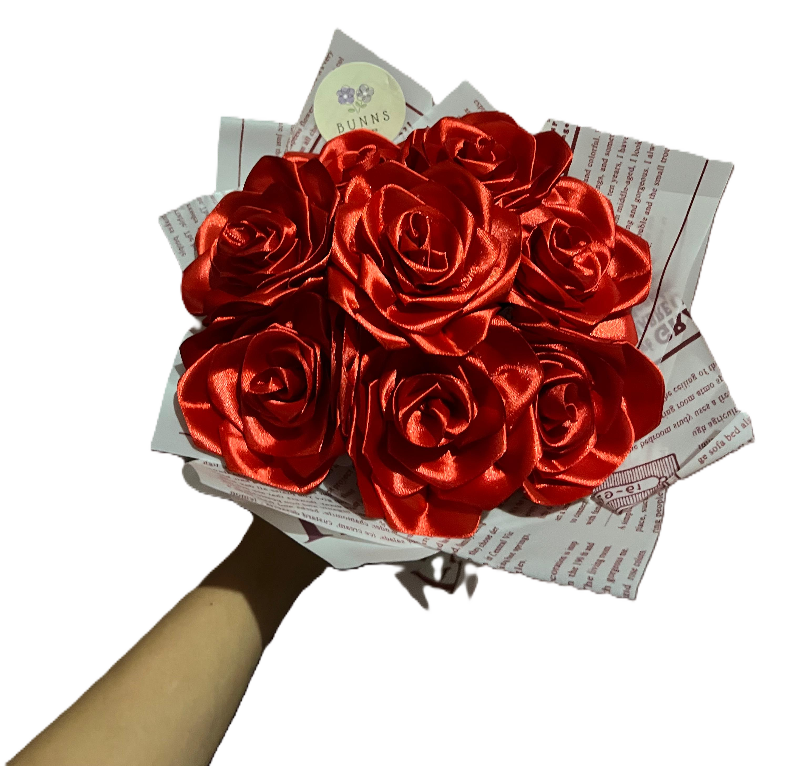
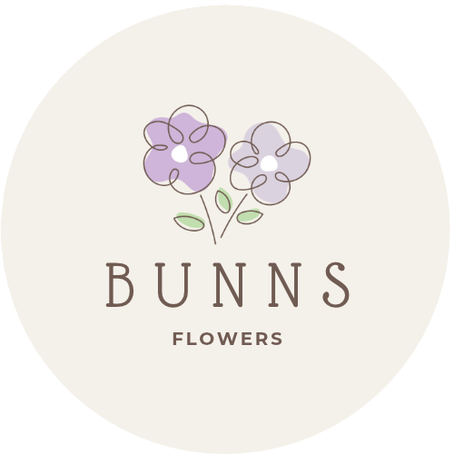
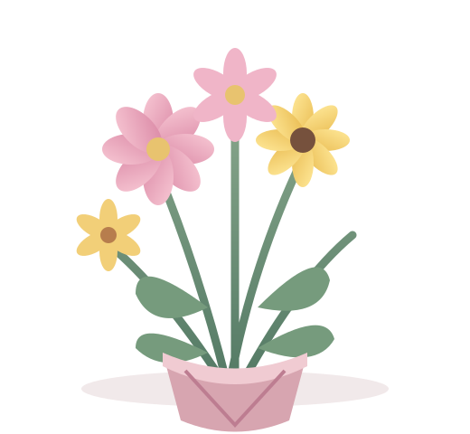
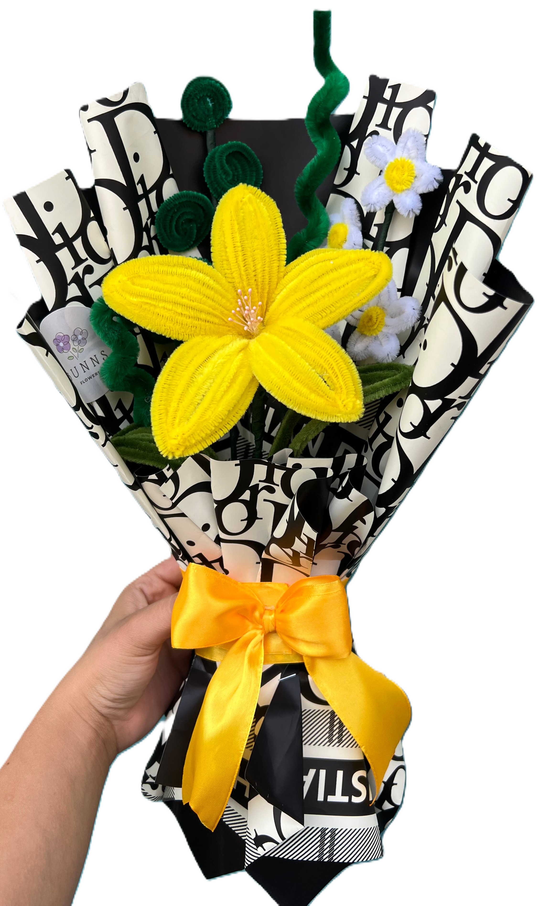
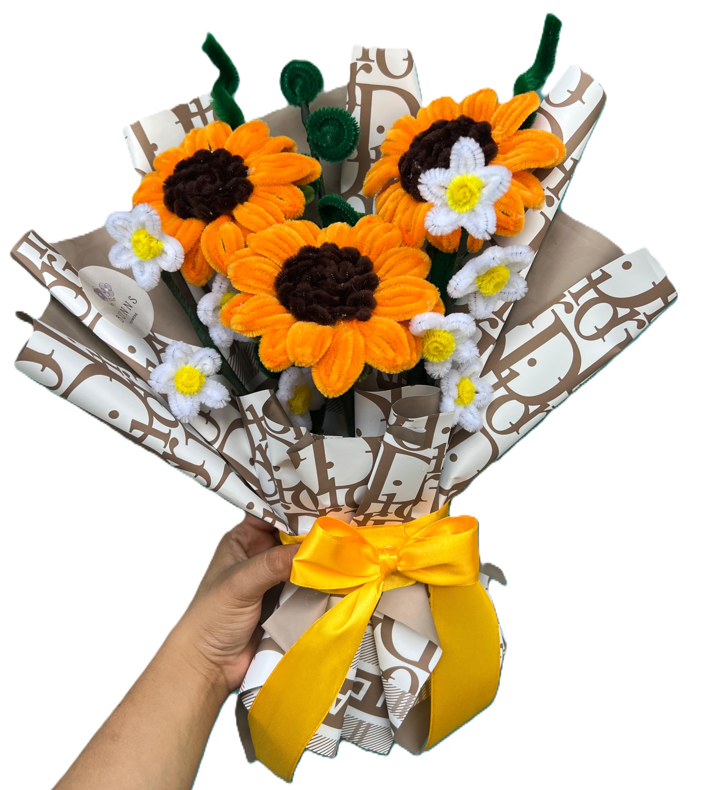
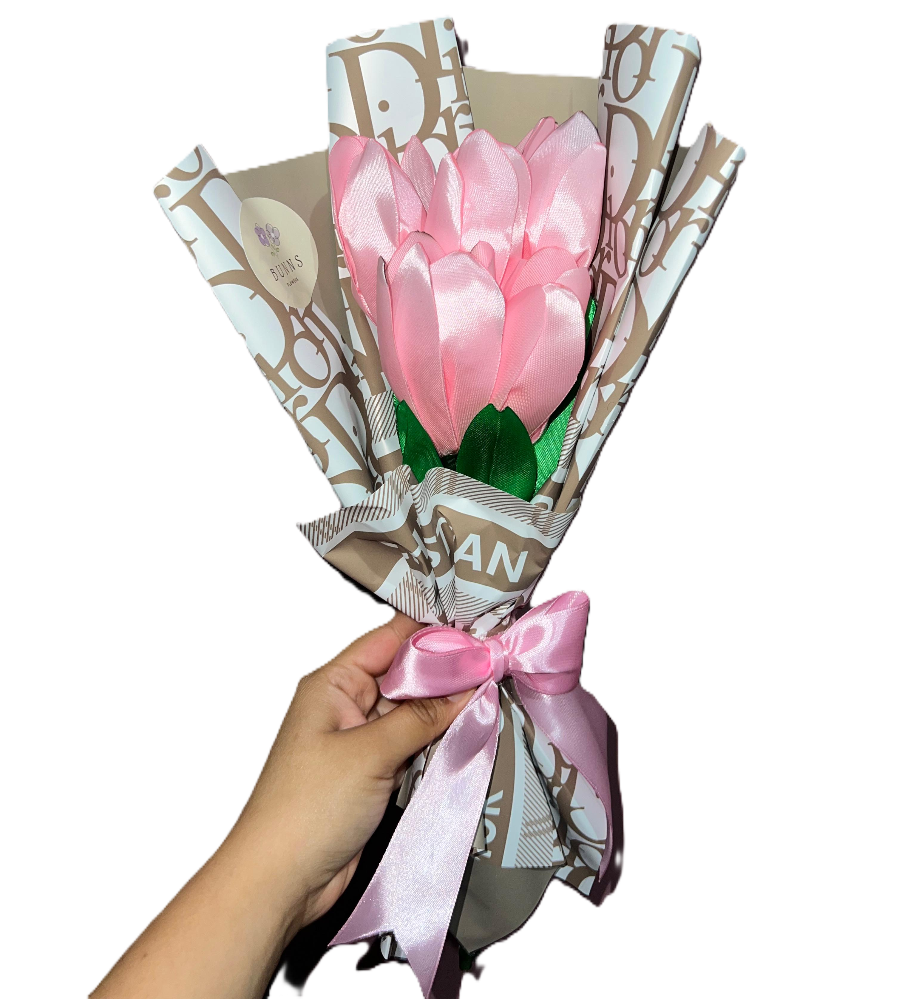
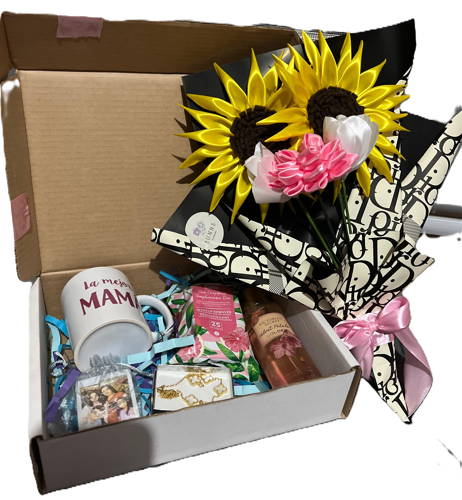

Rosas artesanales
Un clásico lleno de cariño y elegancia.

Bunns FlowersFLORES ARTESANALES Haz tu pedido ↗HECHO A MANO, CON AMOR
Creamos flores de cinta y arreglos artesanales para convertir los momentos especiales en recuerdos que duran.


UN POQUITO SOBRE NOSOTROS
Bunns Flowers es un emprendimiento dedicado a la elaboración de flores artesanales hechas con cinta. Nos encanta transformar materiales sencillos en detalles especiales que transmiten cariño y alegría.
Cada pieza se prepara con dedicación, cuidando los colores, las formas y los acabados para que recibas un regalo tan único como la persona que lo inspira.
NUESTRAS CREACIONES
Encuentra tu favorita o combina varias para crear un regalo inolvidable.

Un clásico lleno de cariño y elegancia.

Un toque de alegría para cualquier día.

Delicados, modernos y llenos de encanto.

Una combinación creada especialmente para ti.
¿Tienes una idea en mente? Cuéntanos qué colores y flores te gustan. ¡Podemos crear un arreglo a tu estilo!
Personalizar mi arreglo ↗“Hay detalles que se regalan una vez,
pero se recuerdan para siempre.”
ESTAMOS PARA AYUDARTE
¿Quieres hacer un pedido, consultar precios o crear un arreglo personalizado? Escríbenos. Nos encantará ayudarte a elegir el detalle perfecto.
UN DETALLE TE ESPERA
Visita nuestro Instagram y envíanos un mensaje para consultar disponibilidad y realizar tu pedido.
Escríbenos por Instagram ↗ Gracias por apoyar lo hecho a mano ♡